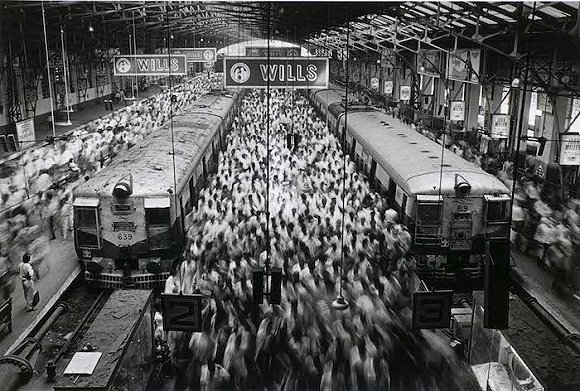

In 2015, The 38-year-old Chinese Mr. Hao, went to the United States alone with great ambition. "Better than China at least." Seeing no future of his mom-and-pop store, he decided to go abroa and make a breakthrough.
Mr. Hao represents a microcosm of the huge immigration. According to the IOM World Immigration Report, the number of international migrants has increased dramatically in the past 45 years.
This chart shows the migration flow around the world.
Blue means the net migration of the country is positive (more inflows) and red means negative (more outflows). One yellow dot represents 1,000 people.
Hover and Click any circle you want (Tap the circle twice if using mobile) to see details of selected country.
The golden dots move busily, mimicing immigrants all around the world come and go. In 2015, 700 million people expressed their intention to emigrate. The actual number of people living outside the country of birth is about 244 million, 100 million more than what it was in 1990. In 2050, it is expected the figure to keep growing to 400 million.
After all, why do people choose to emigrate?
Are immigrants and his families really happier?
This map shows the influx of immigrants from all over the world. The deeper the color, the larger the influxes. Obviously, it is the United States the color of which looks deepest. The U.S. has been the main destination of international migration since 1970. And the number of foreign-born people living in the United States has been almost quadrupled since then.
The size of the circle represents the happiness index of immigrants in this country. The top 10 happiest countries are marked by red. The countries with the largest influx of immigrants are not the happiest ones, for instance, the U.S., whose happiness index of immigrants only ranks 14th over the world.
After receiving Bachelor's degree in Singapore, Qiu chose to apply for a graduate school in the U.S. After graduation, he stayed in Atlanta as an engineer working at a technology company. "The answer is simple——the United States is the most powerful country in the world." For nearly 20 years abroad, he explained the reason why he chose his destination with his no-longer-fluent mother tongue.
Similar with Qiu, two-thirds of immigrants choose developed areas as their destinations. Although those may not necessarily be the happiest countries, they do offer opportunities for immigrants to better their lives. It is the wish for a better life that is the first reason why they emigrate.
In the radar chart below, blue represents the immigrants, and red represents the natives. Although the physical conditions for immigrants, such as GDP per capita, government trust, are not as good as those of natives, the subjective well-being index of immigrants is twice as many as that of the natives.
At least, they feel happier.
In his first year in the United States, Mr. Hao almost gained twenty pounds.
"A fat is always poor." He jokes.In U.S., meat is pretty cheap, while vegetables and fruits are more expensive, compared with China. Without the Permanent Resident Card, he only got a low-wage job at a restaurant in the Chinese community. Mr. Hao budgeted carefully, managing to support his wife and daughter who stayed in China. Exchanging USD to RMB, the money seems to be handsome. "Everything is fine as long as I am healthy." He saied.
Mr. Hao has put on some pounds in the U.S.
Days seem not as bright as he had imagined before leaving China, but Mr. Hao has no regrets for his decision.
"Once there was a Chinese old lady who practice Tai Chi every morning at a park. It is common in China while many foreigners are so interested in Chinese Kungfu! Many foreigners practiced with her and everyone paid her some money. In this way, the old lady bought a big house finally.” He told a story. Mr. Hao plays Tai Chi very well and won several amateur championships. He paused for a while, "It is better than China in my opinion."
Qiu is quite satisfied with his life in US. Qiu’ salary was much higher than he could be paid in China, though not as high as the average level of the US, when he came to America at the first 5 years. Not accustomed to Western food, Qiu cook his meals when graduate school, which in turn improved cooking skills a lot. Qiu expresses firmly he has never thought of giving up even sometimes lonely, "Since you choose to go abroad, you should prepare for loneliness well."
Qiu told us he fitted in the local life and got the Permanent Resident Card in a very short time. Because of his outstanding ability, he quickly became the general manager of the company. Then, it seemed that there was no chance of promotion. "As you all know, it is almost unlikely for a Chinese to get a higher position." He explained, "Because you are Asian and it is unavoidable they will judge you by race."
This bar chart below compares these three index of newcomers(migration under 5 years) and long-timers.
Positive affect means the frequency of happy events people exeriences in daily life and negative affect is the opposite.Life evaluation is people's mental judgment of their current life condition.
Indeed, migration gives people more positive affect and life expectation. As time goes by, some of them get the green cards or get adapted their life abroad, leading to a small increase of life evaluation. But just like Qiu, immigrants already achieve happiness gains during their first five years after migration. This finding suggests that the happiness of immigrants does not improve much with their length of stay in the destination country, which is in line with previous research findings.
New York, shot by Mr. Hao
When Mr. Hao went abroad, his daughter, Rachel, was a middle school student. She didn't know what his father’s job in America.
"I thought it should have been great to go to the United States at that time." She was proud of her father. Mr. Hao’s wife and daughter got a better life because he made more money in America. Rachel is holding a luxury handbag. She shows a lot of pictures of nice food and clothes and selfie with very delicate makeup on social apps.
When Mr. Hao was in China, he made fried dishes for Rachel every morning. Now Dad's delicious breakfast was supplanted by the bread bought from cafe. The tradition of watching movies on weekends is replaced by going to the church.
"If we go to America too, I'm afraid Rachel will be discriminated at school if not religious." So mother made this decision to go to the church.
Hoping to smooth Rachel’s loneliness, Rachel’s mother add a new family, a little dog, which Rachel had wanted since childhood.
However, pets never can be more than pets.
Qiu's marriage and childbirth in the United States saved much trouble Mr. Hao has met. Qiu often sends money his parents who lives in China. "It is similar with rural-to-urban migration in China." He explained. Nowadays, Qiu’s parents miss him from time to time, asking him to come back to China more often, though they support Qiu’s decision to go to America.
This chart measures life evaluation, positive affect and negative affect of immigration's family.
Different color represent different families in conditions.And the radius represent their life evaluation.
Qiu leading a decent life in the U.S.
The results suggest that immigration generally improves the perceived quality of life of household members back home but not necessarily their emotional well-being. Particularly interesting is that having a household member abroad generally does not reduce—and often even increases—negative affect experiences among the family back home. Hence, migration often requires trade-offs between different aspects of happiness for people staying behind.
Now, Qiu's new-established company is developing gradually. He keeps in touch with friends in China and plans to return to China in two years. Qiu does not join the nationality of the USA. "I want to go back."
Mr. Hao, on the other hand, is planning to take his wife and daughter to America. Now it is time for her daughter apply for a college, he wants Rachel to apply a college in US. He is preparing for a happy reunion year in the United States.
Immigrants, experiencing sufferings and tiredness, also acquire hope and happiness. Think twice before you make your decision. And don't regret.